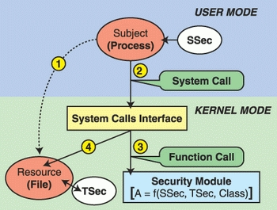

Linux Security Modules (LSM) [WIP]
Table of Contents
1 LKM (Linux Kernel Modules)
- Summary of ./LKM.html
- "Modules" of code that are needed in some installations and not in others. If needed always, compile/build as built-ins.
- Object code file, .ko extension; see
/lib/modules/ insmodloads a module; kernel address space expands, now includes the methods of the module; some of them are syscalls.rmmodunload the module; kernel no longer has the module and its methods.lsmodlist the kernel module currently in the kernel
2 LSM (Linux Security Modules)
- Goal: Modularize security as much as possible. An LSM is an LKM.
- http://elixir.free-electrons.com/linux/latest/source/include/linux/security.h
- hooks := upcalls to a module's methods at security-critical points within the kernel
- An LSM author can control functions called by these hooks to enforce policies
- Linux also adds an opaque security pointer that LSM can use to store security info they need in processes, inodes, sockets, etc.
- LSM hooks are placed so that the Linux DAC checks are performed first, and only if they succeed, is LSM code invoked.
2.1 Security/ Listing
$ ls /usr/local/src/linux-4.19/security/ apparmor device_cgroup.c integrity lsm_audit.c yama built-in.a Kconfig modules.builtin selinux commoncap.c inode.c keys modules.order smack loadpin min_addr.c security.c tomoyo
2.2 Access Control with LSM Module

Figure 1: Access Control with LSM Module
2.3 LSM #2
- https://www.kernel.org/doc/htmldocs/lsm/ General Security Hooks for Linux
- Despite LSM being developed as a security API, LSM provides hooks that could be used by rootkits. http://grsecurity.net/lsm.php
2.4 LSM #3
- Opaque Security Fields were added to objects
- Security Function Hooks were added in important accesses
- A security System Call was added
- Registering security modules
- Modify capabilities to reduce the capable call
2.5 LSM #4
- Additional hooks were provided for working with tasks (nice, kill, setuid)
- for program loading and controlling inheritance of state across program executions (such as file descriptors)
- for IPC
- for file ops (read, write, sockets)
- for network ops (devices, syscalls, sk-buffs)
- for module operations (create, register, delete)
- for sytem operations (hostname, accessing I/O ports, process accounting)
3 AppArmor
4 SELinux
5 References
- http://www.linux.com/learn/docs/727873-overview-of-linux-kernel-security-features/
- Highly recommended reading.
- https://www.kernel.org/doc/html/v4.19/admin-guide/LSM/index.html Linux Security Module Usage, 2018
- http://kernsec.org/wiki/index.php/Projects Kernel Security Projects
- https://github.com/skx/linux-security-modules A collection of three simple linux security modules, more for learning and experimentation than for serious use.
- http://www.kroah.com/linux/talks/ols_2002_lsm_paper/lsm.pdf 2002 Linux Security Module Framework
Chris Wright and Crispin Cowan ∗ WireX Communications, Inc. chris@wirex.com, crispin@wirex.com James Morris Intercode Pty Ltd jmorris@intercode.com.au Stephen Smalley † NAI Labs, Network Associates, Inc. sds@tislabs.com Greg Kroah-Hartman IBM Linux Technology Center gregkh@us.ibm.com
- https://vtluug.org/files/2017/lsm_pew.pdf 8 slides TBD
- http://ics.ajou.ac.kr/~aislab/SC+LKM+LSM.html System Call, LKM, LSM http://ics.ajou.ac.kr/~aislab/SystemCall+LKM+LSM.pdf 39 pp